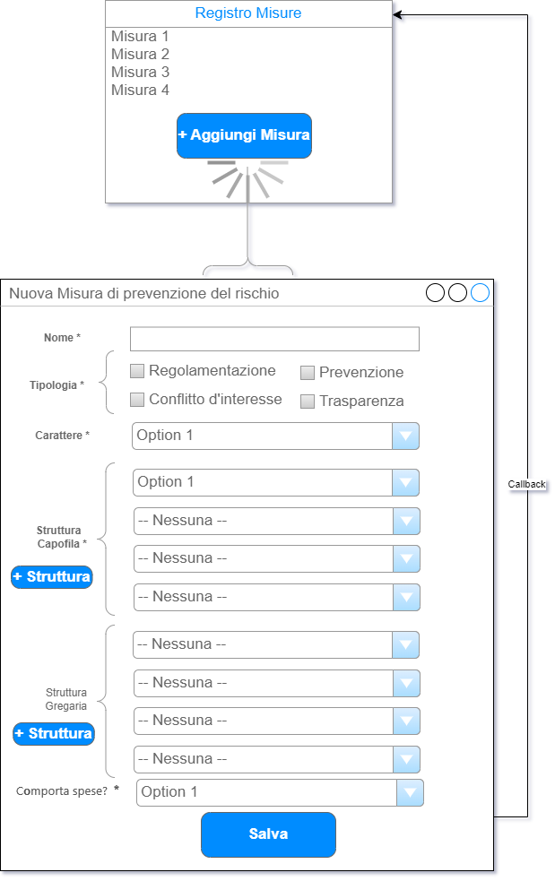
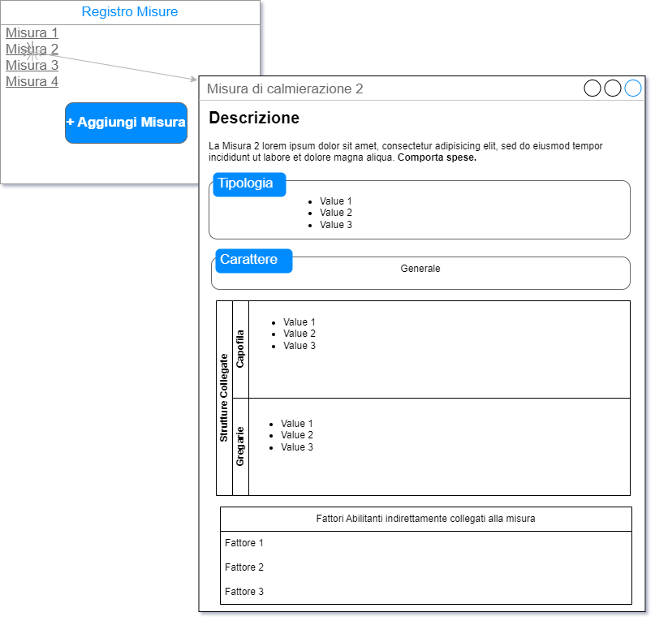

Il registro delle misure è composto da una pagina di elenco delle misure già inserite; se non è stata ancora inserita alcuna misura, la pagina è vuota.
Nella pagina c’è un bottone che permette di accedere alla funzionalità di inserimento di una nuova misura.
Il clic su tale bottone aprirà una nuova pagina, contenente la form di inserimento di una misura.
In questa form sono presenti campi obbligatori e un campo facoltativo. Nel mockup riportato in figura 21, i dati obbligatori sono indicati dal grassetto e dall’asterisco; inoltre, nelle scelte da casella a discesa, se una dropdown list è obbligatoria, specifica già Option 1, mentre se è facoltativa di default specifica “– Nessuna –”.
Per inserire una nuova misura bisogna specificare anzitutto un nome, un carattere ed almeno un tipo; le tipologie della misura possono essere più d’una per una sola misura (cioè una singola misura può riguardare più aspetti e quindi più tipologie).
Quantunque la struttura capofila sia obbligatoria, è possibile per l’utente specificare anche soltanto una struttura di livello 1 (Amministrazione | Dipartimenti | Centri) senza specificare sotto-strutture (direzione, area, uo…); in tal caso, la misura si intende relativa non solo alla struttura specificata, ma anche a tutte le strutture figlie della struttura specificata.
Siccome però la granularità dell’associazione tra la misura e la struttura è molto fine, deve essere possibile collegare una misura anche a sottostrutture di strutture diverse, e il numero di queste associazioni non è vincolato in partenza. Per questo motivo, è presente il pulsante “+ Struttura” che permette di specificare una ulteriore struttura associata alla misura.
Il funzionamento della struttura gregaria è identico a quello della struttura capofila, con la differenza che non è obbligatorio specificare questo campo.
Al salvataggio della funzione, verrà ricaricato l’elenco delle misure, in cui sarà visibile la nuova misura appena aggiunta.
La domanda “[La misura] comporta spese?” è relativa alla sostenibilità economica, e prevede una scelta obbligatoria tra 3 valori: { SI | NO | ND } dove ND sta per “Non Determinabile” (ovvero, non è possibile stabilirlo per chi sta inserendo la misura al momento dell’inserimento della stessa).

Cliccando sul nome di una misura in elenco, nel registro delle misure, sarà anche possibile visualizzare una pagina dei dettagli di una misura.
